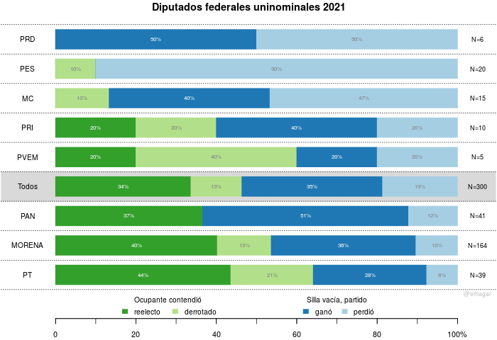

Junto con 15 gubernaturas, la renovación intermedia de la cámara de diputados se llevó los reflectores. Además de que el bloque legislativo del presidente retuvo la mayoría a pesar de la pandemia y una economía deplorable, fue también notable que 101 de 300 diputados de mayoría consiguió reelegirse. Si los patrones de la pista municipal fueron, quizás, más interesantes y reveladores, los federales permiten un contraste desde perspectivas comparativa e histórica para dimensionar el fenómeno.
La Figura 1 resume los resultados. Adopta la perspectiva del partido que defiende cada distrito. El lado derecho enumera los distritos que defendió cada partido: Morena más de la mitad, con 164 distritos, el PAN en un distante segundo lugar, con 41.1 Las barras clasifican las victorias del partido y sus derrotas en dos grandes clases de distritos: aquéllos donde el ocupante compitió por la reelección (verdes) y aquéllos donde no (azules). En el total, 47 por ciento de los ocupantes buscó la reelección consecutiva. Morena y el PAN reeligieron porcentajes similares, 40 y 37% respectivamente en verde oscuro. Pero Morena sumó otro 13% de ocupantes derrotados en las urnas, en verde claro; el PAN, ninguno. Es interesante que la coalición presidencial de Morena, PVEM y PT revelara una ambición estática (la suma de verdes) más aguda que la oposición.

Figura 1: Diputados federales en la boleta (verdes) y los retirados (azules) en 2021. Fuente: investigación propia con datos del INE y de la Cámara de Diputados.
Extrapolando hacia los diputados pluris (los excluyo porque no necesitan construir una coalición electoral y presentan poco interés para el estudio de la reelección consecutiva), en la LXV Legislatura habrá un ocupante reelecto por cada dos novatos. Parecen pocos. La perspectiva comparativa dimensiona este 34%.
La tasas elevadas de rotación en el Congreso son comunes en otras democracias. En Argentina, por ejemplo, del total de diputados que sirvieron entre 1983 y 2001, 85% estuvieron sólo un periodo en el Congreso, y sólo 4% permaneció tres o más periodos (Jones et al. 2002). La reelección consecutiva sin límites no garantiza que los políticos se interesen por ella. La Tabla 1 muestra casos muy heterogéneos. En Estados Unidos, el caso típico de ambición estática, la tasa de retorno (porcentaje de representantes que volvió al Congreso el periodo siguiente) es 86 en décadas recientes. La tasa de retorno de los demás cae escalonadamente. México supera a Argentina, pero la elección intermedia nos mostró más parecidos a Brasil que a Chile en décadas recientes.
| Caso | % de legisladores repostulados | % de respostulados exitosos | % de retorno |
|---|---|---|---|
| Argentina | ? | ? | 15 |
| México | 47 | 72 | 34 |
| Brasil | 70 | 60 | 42 |
| Chile | 71 | 83 | 59 |
| Estados Unidos | 95 | 91 | 86 |
La perspectiva histórica muestra que hay margen para cierto optimismo. La Tabla 2 echa un vistazo a la tasa de retorno a la Cámara en la década de los 1920s en México (Godoy 2014). El crecimiento acelerado es muy patente: con altibajos, pasó de 18 a 42% entre 1917 y 1930. Cayó hasta 27% en 1932 porque se redujo en más de un tercio el tamaño de la Cámara. Desaparece en 1934 con la reforma antirreeleccionista de Calles.
| Año | % de retorno |
|---|---|
| 1917 | 18 |
| 1918 | 25 |
| 1920 | 15 |
| 1922 | 26 |
| 1924 | 25 |
| 1926 | 30 |
| 1928 | 40 |
| 1930 | 42 |
| 1932 | 27 |
| 1934 | 0 |
| media 1917-1930 | 28 |
La tasa de retorno de la elección intermedia 2021 rebasó la media de aquellos años. Si la ambición estática se vuelve a manifestar en proporciones similares a las de este año, la tasa de retorno crecerá en los 2020s como en los 1920s.
El transfuguismo partidista fue muy frecuente en la legislatura que concluye, en particular entre diputados del bloque legislativo del presidente conformado por MORENA, el PT y el PES. Para preparar esta tabla, tomé en cuenta la afiliación partidista que reportaba la Cámara en su sitio de internet a principios de junio 2021. Los datos se encuentran aquí.